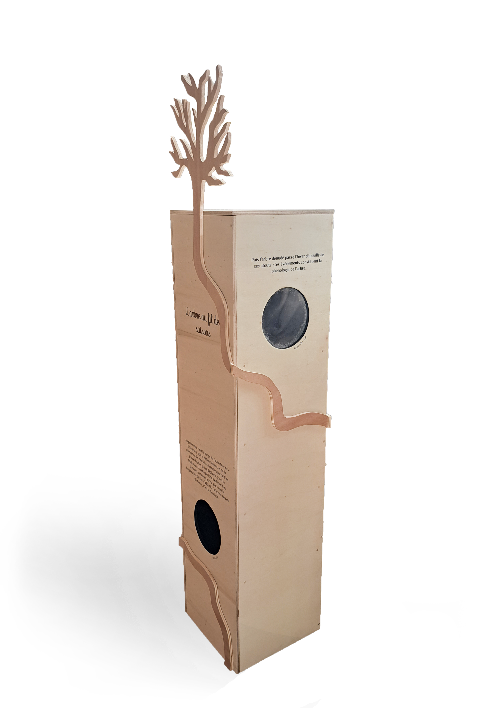
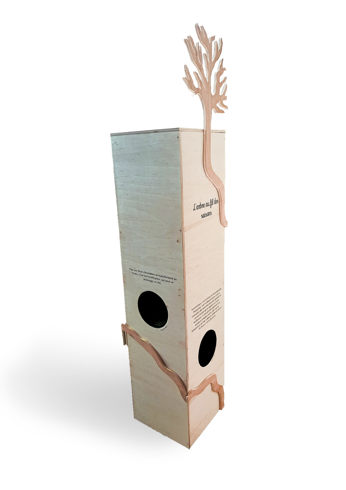

Totem de médiation — L'arbre au fil des saisons
Module communiquant le changement des saisons et l’évolution que celles-ci subissent dans le temps.
Interactive, elle incite les usagers, enfants comme adultes à utiliser leur sens pour découvrir les saisons sous une nouvelle perception. Chaque sens est associé à une saison et une phrase qui explique l’évolution au fil du temps.